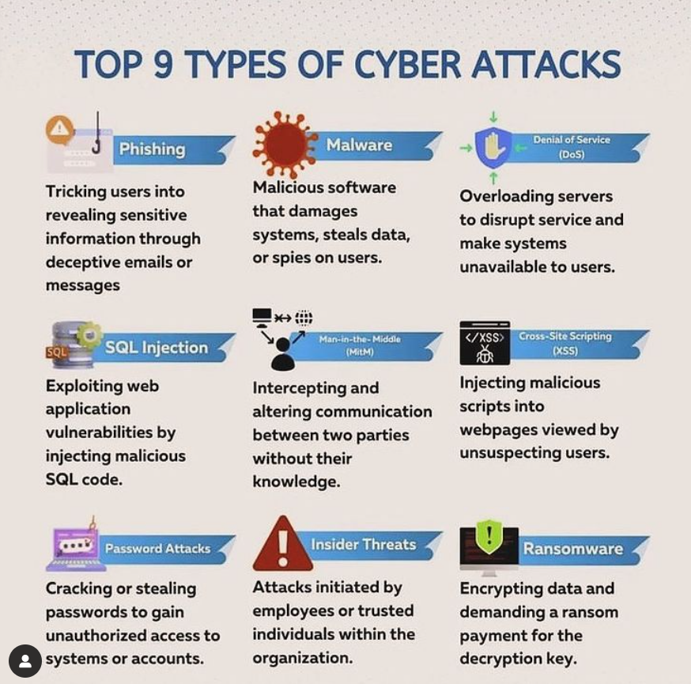
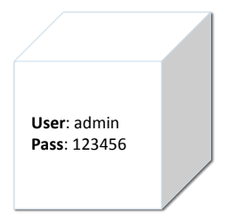
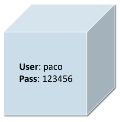
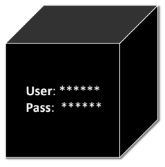

Hacking Ètic
Aspectes relacionats amb el hacking
L'evolució de les TICs ha proporcionat el marc per al desenvolupament de noves i diverses tècniques de hacking, fomentant d'aquesta manera un entorn que engloba diversos aspectes relacionats amb el hacking.
Què és el hacking?
El hacking es pot definir com:
- L'art de fer que les coses funcionen de manera diferent a com el seu creador inicialment va poder pensar.
- La recerca i explotació de vulnerabilitats de seguretat en sistemes o xarxes.
- La detecció i explotació de vulnerabilitats de seguretat.
- El conjunt de tècniques per accedir a sistemes informàtics vulnerant mesures de seguretat.
Què és un hacker?
- Hacker: Persona que vol conèixer, descobrir o aprendre coses noves i entendre com funcionen.
- Cracker: Utilitza el coneixement amb fins maliciosos o il·legals (intrusió, robatori d'informació, etc.).
- Phreaker: Interessat en el món de les telecomunicacions, orientat a reptes de seguretat.
- Lammer: Presumeix de coneixements però només usa eines automàtiques sense comprendre el funcionament intern.
Nota: Hacker ètic ≠ Pirata informàtic = Cibercriminal = Cracker
El hacker ètic és aquell que utilitza tècniques i eines pròpies d’un hacker per accedir a un sistema informàtic, però en aquest cas sense finalitats malicioses ni delictius. I a més, amb dos matisos importants:
Es tracta d’un informàtic expert en Ciberseguretat que, a instàncies d’una empresa o organització, s’encarrega de trobar les vulnerabilitats en els seus sistemes. I d’aquesta manera, ajudar a reparar aquests errors puntuals i desenvolupar una estratègia global robusta, lliure de faltes i punts febles.
Per què es produeixen ciberatacs?
Motivacions premeditades:
- Danyar la imatge d'una organització.
- Benefici econòmic.
- Espionatge polític o industrial.
- Empleats descontents.
- Necessitat de poder de còmput.
Motivacions casuals:
- Emmascarament dels responsables reals.
- Repte personal.
- Entreteniment.
Seguretat
La seguretat és allò exempt de perill, dany o risc. En l’àmbit digital, cal diferenciar:
- Seguretat de la informació: Protecció de dades contra qualsevol amenaça.
- Seguretat informàtica: Subconjunt de la seguretat de la informació, centrada en sistemes informàtics.
Seguretat de la informació ≠ Seguretat informàtica
Informació
La informació és un actiu crític per a qualsevol organització. Cal protegir-la per:
- Assegurar la continuïtat del negoci.
- Minimitzar els riscos.
- Maximitzar el retorn de la inversió (ROI).
Què és el hacking ètic?
Pràctica que consisteix a utilitzar coneixements per ajudar a detectar vulnerabilitats amb el consentiment de l’organització. Inclou:
- Proves conegudes pels administradors.
- No causen danys.
- Resultats documentats per millorar la seguretat.
Projectes: S'ha de respectar el contracte amb el client. Aquest defineix els límits d’actuació.
Llei del hacking del Codi Penal
- Les empreses poden ser responsables de delictes informàtics dels seus empleats.
- La responsabilitat es transfereix en casos de fusió empresarial.
- Les sancions poden ser des de multes fins a la dissolució de l’empresa.
- El sector públic està exempt.
- Penes per accés no autoritzat: entre 6 mesos i 2 anys de presó.
Article 197 del Codi Penal
Revela dades que afecten la intimitat o la privacitat. També és delicte difondre informació obtinguda amb consentiment però divulgada contra la voluntat.
Article 197 bis
Tipifica el ciberespionatge, cracking, black hacking. Penalitza l’accés no autoritzat i la intercepció de transmissions informàtiques privades.
Article 197 ter
Penalitza produir, adquirir, importar o facilitar eines per cometre delictes tipificats als articles 197 i 197 bis.
Conclusió: Els professionals de la seguretat informàtica han de conèixer el marc legal. El Codi Penal pot equiparar un investigador de seguretat a un delinqüent si no actua segons la llei.
Elements del Hacking Ètic
Els elements del hacking ètic són els components clau que defineixen l'activitat de provar i protegir sistemes informàtics de manera legal i ètica. Aquests elements són essencials per garantir la seguretat i la integritat de xarxes, aplicacions i dades
1. Permís i autorització
El més important. El hacker ètic necessita permís explícit dels propietaris del sistema abans de realitzar qualsevol prova.
Sense autorització, qualsevol activitat es consideraria il·legal.
2. Recollida d’informació (Reconnaissance)
Identificar i recopilar dades sobre el sistema objectiu.
Pot ser:
- Passiva (sense interactuar directament amb el sistema)
- Activa (amb escanejos o contactes amb el sistema)
3. Anàlisi de vulnerabilitats
Identificar debilitats del sistema (versions de software obsoletes, ports oberts, configuracions insegures).
🧪4. Proves d’explotació (Exploitation)
Simular atacs per veure si les vulnerabilitats poden ser explotades.
Es fa amb cura per no danyar el sistema ni perdre dades.
📋5. Redacció d’informes
Descriure les vulnerabilitats trobades, l’impacte potencial i com solucionar-les.
L’informe ha de ser clar, detallat i entenedor per a tècnics i directius.
6. Proposta de solucions i mitigació
Recomanar mesures correctives per solucionar els problemes detectats.
Pot incloure: actualitzacions, canvis de configuració, formació de personal, etc.
7. Proves de seguiment (Re-test)
Tornar a fer proves per verificar que les vulnerabilitats s’han corregit.
8. Compliment legal i ètic
Seguir codis deontològics, com el de l’EC-Council o la (ISC)².
Respectar la confidencialitat de les dades.
Vulnerabilitats
En el context de la seguretat informàtica, una vulnerabilitat és una feblesa o error en un sistema que pot ser aprofitat per un atacant per comprometre la confidencialitat, la integritat o la disponibilitat de les dades i serveis. Les vulnerabilitats poden existir tant en programari com en maquinari, i poden ser resultat d’errors de programació, configuracions incorrectes o fins i tot factors humans. Hi ha diferents tipus de vulnerabilitats que s’han d’identificar i mitigar per tal d’assegurar la protecció dels sistemes.
Elements a protegir
- Maquinari
- Programari
- Dades ← El més important i difícil de recuperar
- Comunicacions
- Factor humà ← El més difícil de controlar
Nivells de profunditat
- Legals: LOPDGDD RGPD
- Comunicacions: protocols segurs
- Organitzatius: nivells d’accés, contrasenyes
- Físiques: ubicació d’equips, subministrament elèctric
Tipus de Vulnerabilitats
- Vulnerabilitats de programari: Aquestes vulnerabilitats es troben en el codi del programari o de les aplicacions i són causades per errors de programació, com desbordaments de memòria, fallades en la validació d’entrades o manca de comprovació d’accessos. Un atacant pot aprofitar aquests errors per executar codi maliciós o accedir a dades sensibles.
- Vulnerabilitats de configuració: Es produeixen quan els sistemes o aplicacions estan mal configurats, permetent que usuaris no autoritzats accedisquen a recursos sensibles. Açò pot incloure contrasenyes predeterminades, ports oberts innecessaris o permisos d’accés incorrectes.
- Vulnerabilitats en el maquinari: Algunes fallades de seguretat poden derivar-se de febleses físiques en els dispositius, com la manca de protecció en les interfícies de maquinari o l'accés físic no restringit a servidors i altres equips crítics.
- Vulnerabilitats en la xarxa: Fan referència a febleses en la infraestructura de xarxa que poden permetre als atacants interceptar, modificar o redirigir el trànsit de dades. Inclou configuracions incorrectes en routers, firewalls mal configurats o ús de protocols insegurs (com HTTP en lloc d’HTTPS).
- Vulnerabilitats humanes: Són causades per errors o males pràctiques dels usuaris, com l’ús de contrasenyes febles, la falta de formació en seguretat, o caure en atacs d’enginyeria social (per exemple, phishing). Encara que no són tècniques, poden ser igual de perilloses.
Causes Comunes de les Vulnerabilitats
- Errors en el desenvolupament de programari: Moltes fallades de seguretat són resultat de males pràctiques de codificació, com la falta de validació d’entrades o la no implementació de controls de seguretat.
- Actualitzacions insuficients: Les vulnerabilitats conegudes es poden solucionar amb actualitzacions regulars. No mantindre els sistemes actualitzats pot exposar els usuaris a riscos innecessaris.
- Manca de proves de seguretat: No realitzar proves de seguretat o auditories regulars pot deixar vulnerabilitats sense detectar.
- Configuracions predeterminades insegures: Molts dispositius i aplicacions venen amb configuracions que no són segures. Els atacants poden aprofitar-les si no s’ajusten adequadament.
Mitigació de Vulnerabilitats
Per a reduir el risc d’explotació de vulnerabilitats, és essencial implementar pràctiques com:
- Actualitzacions periòdiques: Assegurar-se que tots els sistemes, aplicacions i programari estiguen actualitzats amb els últims pegats de seguretat.
- Escanejos i auditories de seguretat: Realitzar escanejos i auditories per detectar i verificar vulnerabilitats i configuracions.
- Formació en seguretat: Educar els usuaris en bones pràctiques, com utilitzar contrasenyes fortes, no fer clic en enllaços sospitosos i no compartir informació sensible.
- Xifrat: Utilitzar xifrat per protegir la confidencialitat de les dades tant en trànsit com en repòs.
- Seguretat en capes: Implementar diverses estratègies de defensa per protegir els sistemes de diferents tipus d’atacs.
En resum, les vulnerabilitats són punts febles que poden ser explotats per atacants. Identificar-les, mitigar-les i gestionar-les adequadament és clau per protegir la informació.
Vulnerabilitat "Zero-Day"
Una vulnerabilitat zero-day és una vulnerabilitat desconeguda pel desenvolupador en el moment que és descoberta per un atacant. El terme "zero-day" fa referència al fet que els desenvolupadors tenen "zero dies" per solucionar-la abans que siga explotada.
Característiques d’una Zero-Day
- Desconeixement inicial: Tant el desenvolupador com els usuaris no saben de la seua existència.
- Explotació per part d’atacants: Pot permetre accés no autoritzat, execució de codi maliciós o altres accions nocius.
- Sense pegat disponible: Com que és desconeguda, no hi ha cap solució publicada en el moment.
- Gravetat: Són molt perilloses perquè els atacants tenen avantatge fins que es publica una solució.
Exemple d’atac Zero-Day
Un atacant pot descobrir una vulnerabilitat en un sistema operatiu com Windows o macOS i controlar una màquina sense que l’usuari ho sàpiga, per exemple obrint un arxiu adjunt. Mentre siga desconeguda, l’atacant pot explotar-la lliurement.
Com es gestionen les Zero-Day?
- Investigació i pegats: Els desenvolupadors treballen per corregir el problema. També poden avisar empreses de seguretat o investigadors.
- Exploits i mercats: Algunes són venudes en mercats il·legals, encara que també poden ser comprades per governs per a operacions de ciberseguretat o ciberespionatge.
Prevenció d’una Zero-Day
Per protegir-se d’una zero-day, es poden seguir estratègies com:
- Mantindre sistemes actualitzats: Encara que siga desconeguda, mantindre tot actualitzat ajuda a aplicar pegats ràpidament.
- Utilitzar programes de seguretat: Antivirus, firewalls i sistemes de detecció poden ajudar a mitigar els danys.
- Autenticació multifactor: Redueix l’impacte d’un atac encara que la vulnerabilitat siga explotada.
Amenaces
En ciberseguretat, una amenaça és qualsevol situació que pot tindre conseqüències negatives per a l’empresa: operacions, funcions, marca, reputació o imatge.
Les amenaces poden manifestar-se com virus, malware, ransomware, phishing, atacs de denegació de servei (DoS), etc.
Podem classificar-les segons:
Lloc de procedència:
- Internes
- Insider
- Desconeixement / Manca de formació
- Externes
- Campanyes de hackeig
- Atac dirigit
A què poden afectar:
- Físiques
- Robatoris, sabotatges, destrucció de sistemes
- Interrupcions de subministrament elèctric
- Condicions atmosfèriques: humitat, altes o baixes temperatures
- Interferències electromagnètiques
- Lògiques
- Rogueware o falsos programes de seguretat
- Backdoors o portes del darrere
- Virus
- Gusans o worms
- Troians
- Keylogger
- Rootkit
Atacs
Un atac informàtic és un intent de comprometre la seguretat d’un sistema informàtic per causar danys intencionats al seu funcionament.
Tècniques d’atac
Vectors d’atac
Els vectors d’atac són les vies que s’utilitzen per aprofitar vulnerabilitats en ordinadors, aplicacions, servidors de correu, programari, webs, navegadors, xarxes, etc.
Classificació de Vulnerabilitats
Quan es descobreix una vulnerabilitat, es detalla en un "paper"
Quan s’informa d’una vulnerabilitat en un “paper”, aquesta es valora i classifica.
CVE (Common Vulnerabilities and Exposures) és un sistema que dona un identificador numèric que s'assigna a les vulnerabilitats de seguretat quan s'informen públicament. L'identificador es composa de tres elements: CVE-XXXX-YYYY, on els quatre primers dígits corresponen a l'any en que es fa pública la vulnerabilitat, i els següents corresponene a l'identificador de la vulnerabilitat d'exie any
Esta llista es pot consultar en la web de la corporació MITRE en www.cve.org
També - BBDD de vulnerabilitats - https://nvd.nist.gov/
Existeixen bases de dades de vulnerabilitats i calculadores de risc per a cadascuna.
CVSS (Common Vulnerabilities Score System) és el sistema que s'emplea per realitzar una valoració de la Gravetat de cada vulnerabilitat. La seua última versió es la 4. El sistema empra una serie de mètriques en diferents categories.
En funció de la puntuació, una vulnerabilitat tindrà una gravetat. Baixa, Mitja, Alta o Crítica.
NVE - FIRST
Calculadora de perillositat d’una vulnerabilitat https://www.first.org/cvss/
CWE (Common Weakness Enumeration) es una classificació de vulnerabilitats en categories que es pot trovar en: CWE Mitre
CSIRT
L’evolució del malware i altres amenaces, així com l’aparició de normatives per protegir la informació, han fet que els equips de resposta a incidents (CSIRT - Computer Security Incident Response Team) siguen vitals per a les organitzacions.
INCIBE
https://www.incibe-cert.es/Cert CV
http://www.csirtcv.gva.es/CCN-CERT
https://www.ccn-cert.cni.es/ENISA (altres països europeus)
https://www.enisa.europa.euAuditories
Metodologia en el procés d'auditoria
Introducció
Una auditoria és una revisió pràctica que es realitza sobre els recursos informàtics que disposa una entitat amb la finalitat d'emetre un informe o dictamen sobre la situació en què es desenvolupen i s'utilitzen.
Un procés d'auditoria recorre certes pràctiques enfocades a les diferents proves que s'hauran de realitzar per satisfer la demanda de client, utilitzant el Hacking Ètic en algunes de les fases d'aquest procés.
Equip d'auditoria
En tota proposta per realitzar un procés de Hacking Ètic s'ha d'explicar la composició de l'equip d'auditoria. És important reflectir per escrit les característiques, estudis i especialitats de cada un dels integrants (com si fora un currículum).
Sempre hi haurà un responsable al càrrec del projecte, que farà d'interlocutor amb l'empresa contractant.
Abast del projecte
S'ha d'estudiar l'abast del projecte global, especificant les tasques compreses, i els diferents abastos de projecte dels diferents processos d'auditoria.
En l'abast del projecte s'especifica davant quina situació l'empresa que realitza el procés ha de notificar vulnerabilitats detectades, i quina és la via per dur a terme les notificacions, per exemple utilitzant el correu electrònic, mitjançant l'ús de claus PGP, per protegir la confidencialitat dels documents.
També es pot indicar els contactes que es realitzaran per informar de les proves realitzades, per notificar possibles perills de qualitat de servei en certes proves crítiques, com denegacions de servei.
Selecció i informació de l'objectiu
En tot procés de Hacking Ètic, hi ha una etapa on l'auditor dedica temps a la selecció i informació de l'objectiu: És totalment necessari conèixer l'entorn a què s'enfronta l'auditor per exposar les proves d'avaluació de seguretat.
En aquesta primera etapa, dependrà de l'objecte de l'auditoria o procés agregat a què s'enfronte l'auditor. Depén de l'objectiu, es necessita un tipus d'informació.
Confecció de l'atac i intrusió controlada
En totes les proves del Hacking Ètic, hi ha una fase en què l'auditor realitzarà diferents atacs amb diferents enfocaments o objectius. Tots ells tenen una característica comuna i és que totes aquestes proves han d'estar sota control de l'empresa i grup d'auditors que realitzen els atacs.
L'experiència de l'auditor i el coneixement de les diferents tecnologies a les que l'auditor es pot enfrontar és una cosa vital per completar el ventall de proves, com són: verificació i validació de les comunicacions, validació d'entrades, manipulació de paràmetres, autenticació i gestió de sessions, coneixement i descobriment de la implementació de la xarxa...
Revisió del procés
Un cop els atacs han anat desvetllant els errors de seguretat en les diferents auditories, l'auditor ha d'informar i recopilar unes mesures correctores que solucionen els problemes de seguretat descoberts. No serà l'auditor qui solvente aquests errors de seguretat, però sí que serà el que recomane l'aplicació de diferents tasques per mitigar o solucionar-los.
Documentació
Tota prova haurà d'estar correctament documentada, en dos tipus d'informes, el primer a manera executiu informant de les observacions més destacades, i el segon a manera tècnica detallant tot el procés efectuat en l'organització i les proves realitzades.
És altament recomanable que l'auditor documente des del primer dia les proves i resultats que es van obtenint, tant perquè puga realitzar el seu treball correctament, així després l'informe es realitza en un període de temps menor.
Interlocutors i emmagatzematge de la informació
És important que la comunicació amb el client sempre vaja protegida, en funció de l'àmbit en què aquesta comunicació es produisca. Per exemple, mitjançant la utilització de claus PGP i ús de certificats digitals.
Un altre aspecte serà l'emmagatzematge de la informació rebuda per l'empresa contractant que ha de ser emmagatzemada de forma segura, a través d'un sistema d'autenticació i control d'accessos, protegint la confidencialitat d'aquesta informació mitjançant l'ús de xifrat robust. Emmagatzemar durant una vigència màxima, la qual serà acordada amb el client, però és comú destruir-la de manera segura al finalitzar el treball.
Tipus d'auditories
Al hacking ètic es parteix de 3 grans tipus d'auditoria. S'identifiquen per colors, com es pot visualitzar en la imatge inferior i cadascuna té unes propietats. Quan es parla auditoria interna, auditoria externa o auditoria de caixa blanca, per exemple, es poden classificar dins d'alguna d'aquestes 3 caixes:
- Caixa blanca: l'auditor té tot el coneixement i privilegi (ex. auditoria de codi).
- Caixa grisa: l'auditor actua com un empleat sense privilegis, des de dins.
- Caixa negra: l'auditor actua com un atacant extern, sense coneixement previ.
Caixa blanca
Caixa blanca és en la que l'auditor té tot el coneixement i el privilegi. En altres paraules, l'auditor té tot el necessari per avaluar la seguretat d'un sistema o aplicació.
Per exemple, una auditoria de codi seria de caixa blanca, ja que es té accés a el codi i es pot avaluar. Un altre exemple seria la comprovació de la seguretat de la configuració d'un servidor de correu electrònic, ja que de nou es té accés i privilegi per poder avaluar-lo.
Caixa gris
Caixa gris és la que situa l'auditor en un paper d'empleat sense privilegi o convidat a l'organització. A més, l'auditor, generalment, executarà el treball des de l'interior de l'organització. L'auditor estarà en el dia a dia de l'empresa.
L'auditoria de caixa grisa permet a l'auditor conèixer una mica de l'interior de l'organització, per exemple tenir connectivitat amb alguns equips interns, però no té cap tipus de privilegi a la xarxa. Comunament, un dels objectius de l'auditor en aquest tipus d'auditoria és obtenir privilegi a la xarxa per poder treure un benefici.
Caixa negra
Caixa negra és la que situa a l'auditor en un paper de atacant extern. L'auditor no té cap coneixement sobre què hi ha dins de l'organització o la seva estructura de xarxa. L'objectiu és avaluar fins on podria arribar un atacant extern i el dany es podria realitzar a l'organització.
Fases del procés en una auditoria de seguretat
- Footprinting: recopilació d'informació pública.
- Fingerprinting i enumeració: identificació de serveis i versions exposades.
- Anàlisi de vulnerabilitats: identificació de vulnerabilitats conegudes.
- Explotació de vulnerabilitats: prova pràctica de les vulnerabilitats.
- Generació d'informes: resultats presentats en format executiu i tècnic.
Footprinting
Aquesta primera fase proposa recol·lectar informació pública. També és coneguda com a part de l'Information Gathering. És una fase menys important quan l'entorn és intern, per exemple, en una auditoria interna a una empresa. En el cas d'una auditoria web (caixa negra) és una fase inicial important.
Fingerprinting i enumeració
Aquesta fase permet a l'auditor analitzar els serveis localitzats en la fase de footprint. L'objectiu és clar: aconseguir informació detallada dels serveis que ofereix l'organització. L'anàlisi de ports oberts, l'anàlisi de mecanismes de protecció i l'obtenció de versions d'aplicacions exposades és una cosa molt útil en una auditoria i s'obté en aquesta fase.
Analisi de vulnerabilitats
En aquesta fase s'analitzen les vulnerabilitats conegudes sobre els serveis analitzats en la fase de fingerprinting. Se solen utilitzar eines automàtiques que tenen bases de dades de vulnerabilitats i es pot contrastar el trobat en el fingerprinting amb l'existència de vulnerabilitats.
Explotació de vulnerabilitats
En aquesta fase es porta a terme l'explotació de vulnerabilitats en la fase d'anàlisi de vulnerabilitats.
Generació d'informes
En aquesta fase es presenta el treball, en forma d'informe, dut a terme per l'auditor a l'empresa que va contractar el servei. Hi ha dos tipus d'informes: executiu i tècnic.
Auditoria vs Test d'intrusió
Un procés d'Auditoria de Seguretat se centra a analitzar TOTES les vulnerabilitats que puga patir una organització.
Un Test d'Intrusió té com a objectiu ACONSEGUIR VULNERAR el sistema de una organització. És a dir, amb localitzar una única vulnerabilitat és suficient per finalitzar el treball.
En resum, l'única diferència és que en un Test d'Intrusió només necessitarem localitzar una vulnerabilitat per prendre el control de sistema i en el procés de Auditoria de Seguretat intentarem identificar totes les possibles falles de seguretat.
Test d'intrusió ⊆ Auditoria
Estàndards, models i llistes de seguretat
Estàndards i models - Definicions
Els estàndards són especificacions sobre com s'ha de desenvolupar una tasca o funció determinada, basats en acords entre entitats o grups.
Un model és una representació ideal d’un sistema real. És una abstracció selectiva que defineix una funció objectiu amb restriccions.
Els estàndards serveixen com a patró o punt de referència per:
- Homogeneïtzar processos
- Comparar amb mètriques
- Definir proves i actuacions
OWASP – Open Web Application Security Project
Projecte de codi obert per a la seguretat del software. Format per organitzacions, educadors i particulars.
- Guia OWASP: document extens amb guia detallada
- OWASP Top 10: llista de vulnerabilitats més crítiques, actualitzada cada 3 anys
Top 10 OWASP 2021
- A01: Trencament del control d'accés
- A02: Errades criptogràfiques
- A03: Injecció
- A04: Disseny insegur
- A05: Desconfiguració de la seguretat
- A06: Components vulnerables i obsolets
- A07: Errors d'identificació i autenticació
- A08: Errades d'integritat del software i les dades
- A09: Errades en registre i supervisió de la seguretat
- A10: Falsificació de sol·licituds del servidor
OSSTMM - Open Source Security Testing Methodology Manual
Estàndard complet per a auditories de seguretat. Composta per 15 capítols i revisada per experts internacionals.
- Secció A - Seguretat de la Informació
- Secció B - Seguretat dels Processos
- Secció C - Tecnologies d'Internet
- Secció D - Comunicacions
- Secció I - Xarxes sense fil
- Secció F - Seguretat Física
Defineix QUÈ provar, COM fer-ho i QUAN executar-ho.
FIRST - Forum of Incident Response and Security Teams
Organització líder en resposta a incidents de ciberseguretat.
Assigna una puntuació (score) de 0 a 10 segons la severitat de la vulnerabilitat.
MITRE Corporation
Organització sense ànim de lucre que dona suport a agències dels EUA.
- CWE: Common Weakness Enumeration – Categories d’errors en el software (cwe.mitre.org)
- CVE: Common Vulnerabilities and Exposures – Registre de vulnerabilitats (cve.mitre.org)
Llistes de seguretat
Llistes d'informació sobre vulnerabilitats conegudes. Assignen un identificador únic a cada nova vulnerabilitat.
CERTs
Equips de resposta a emergències informàtiques. Proporcionen serveis i avisen de vulnerabilitats.
- IRIS-CERT: rediris.es/cert
- INCIBE: certsi.es
- CCN-CERT: ccn-cert.cni.es
- CSIRT-CV: csirtcv.gva.es
Deep Web i Dark Web
🌐 Què és la Deep Web?
La Deep Web és la part d’Internet que no està indexada pels motors de cerca convencionals.
Inclou:
- Bases de dades acadèmiques
- Intranets (corporatives, escolars)
- Contingut protegit amb contrasenya (bancs, correus privats)
- Pàgines amb accés restringit (formularis, portals de salut, administració electrònica...)
🔐 Exemple: el teu correu de Gmail, el compte bancari online, o un expedient acadèmic són Deep Web.
🌑 Què és la Dark Web?
La Dark Web és una petita part de la Deep Web que requereix eines específiques per accedir-hi, com el navegador Tor o xarxes com I2P.
Característiques:
- No s’hi pot accedir amb navegadors normals (Chrome, Firefox...)
- Utilitza dominis com
.onion - Garanteix l’anonimat mitjançant xifrat i redirecció de tràfic
Contingut:
- 📚 Positiu: fòrums de llibertat d’expressió, periodisme anònim, accés lliure en països amb censura
- 🧨 Negatiu: mercats il·legals (drogues, armes, dades robades), serveis criminals, pornografia il·legal
⚠️ Important: La Dark Web no és il·legal en si, però molta de l’activitat que s’hi fa sí que ho és.
🧱 Parts d’Internet (model iceberg)
☁️ Internet superficial (Surface Web)
└─ Google, Wikipedia, YouTube, notícies...
🌊 Deep Web
└─ Correu electrònic, bancs, intranets, dades no indexades
🕸️ Dark Web
└─ Web anònima, accés amb Tor, contingut ocult
🔑 Resum ràpid
| Aspecte | Surface Web | Deep Web | Dark Web |
|---|---|---|---|
| Accessible via Google | ✅ Sí | ❌ No | ❌ No |
| Exemples | Google, YouTube | Gmail, bancs, portals escolars | Mercats .onion, fòrums Tor |
| Requereix eines especials | ❌ No | ❌ Normalment no | ✅ Sí (Tor, I2P, etc.) |
| Anonimat | ❌ Baix | ⚠️ Mitjà | ✅ Alt |
| Legalitat | ✅ Legal | ✅ Legal | ⚠️ Depèn de l’ús |
Ferramentes i Eines per Accedir a la Dark Web
🛠️ Eines i ferramentes per accedir a la Dark Web
La Dark Web no es pot visitar amb navegadors convencionals. Calen eines específiques que permeten accedir a llocs web anònims i xifrats, com ara els dominis .onion.
📌 1. Navegador Tor (The Onion Router)
- 🔑 Eina principal i més segura per accedir a llocs
.onion. - Funciona redirigint el trànsit a través de nodes anònims.
- Disponible per a Windows, Linux, Mac i Android.
- Inclou motor de cerca com DuckDuckGo for Tor.
- Web oficial: https://www.torproject.org
⚠️ No cal configurar res manualment. Només cal descarregar i començar a navegar per enllaços .onion.
🔎 2. Navegadors alternatius (basats en Tor)
- Brave (amb mode Tor): navegador privat que permet obrir pestanyes amb Tor, tot i que no tan segur com el navegador Tor original.
- Whonix: sistema operatiu orientat a la seguretat i privacitat, integrat amb Tor.
🕵️ 3. Sistemes operatius segurs
Són entorns preparats per accedir a la Dark Web amb més anonimat.
✅ Tails OS
- Sistema operatiu portàtil (s’engega des d’un USB)
- Tot el trànsit passa per Tor automàticament
- No deixa rastres a l’ordinador
🧱 Qubes OS
- Sistema operatiu per a usuaris avançats
- Utilitza màquines virtuals separades per compartiments de seguretat
🌐 4. Cercadors per la Dark Web
Encara que no són com Google, existeixen cercadors especials:
- Ahmia: https://ahmia.fi (funciona dins i fora de Tor)
- DuckDuckGo (versió .onion): http://3g2upl4pq6kufc4m.onion
- Torch: un dels primers cercadors per Tor
⚠️ Molts cercadors .onion poden mostrar enllaços obsolets o perillosos. Ves amb compte.
🔒 5. Altres eines útils
- VPN (xarxa privada virtual): afegeix una capa extra d'anonimat abans de connectar-te a Tor.
- PGP (Pretty Good Privacy): per xifrar missatges entre usuaris.
- OnionShare: eina per compartir fitxers de forma segura a través de la xarxa Tor.
- Torify: per redirigir altres aplicacions a través de la xarxa Tor.
⚠️ Recomanacions de seguretat
- No facis clic a enllaços aleatoris
.onionsense verificar-ne la font. - No iniciïs sessió en serveis reals (com el teu correu personal) des del navegador Tor.
- No descarreguis arxius desconeguts o executables.
- Evita Javascript i complements (plugins): poden trencar l'anonimat.
- Millor accedir-hi des de sistemes com Tails o màquines virtuals.
Altres Dark Web que no són Tor
🕸️ Altres Dark Webs que no són Tor
A més de Tor, existeixen altres xarxes que formen part de la Dark Web. Aquestes tecnologies permeten l'accés anònim i xifrat a contingut no indexat i sovint censurat.
🌀 1. I2P (Invisible Internet Project)
- Xarxa anònima que permet comunicacions xifrades punt a punt.
- Els llocs dins I2P es diuen "eepsites" i acaben amb
.i2p. - No està pensat per accedir a la web oberta (com Tor), sinó per crear una Internet paral·lela i segura.
- S’utilitza per:
- Xats privats
- Blogs, fòrums, mercats anònims
- Correu electrònic xifrat
🔒 Molt més descentralitzat i privat que Tor, però més difícil d’utilitzar.
🧅 2. Freenet
- Plataforma descentralitzada i anònima per publicar i accedir a informació.
- Utilitza un sistema de fitxers xifrats que es distribueixen entre usuaris.
- Pensat per:
- Publicació de contingut resistent a la censura
- Missatges anònims
- Fòrums privats
- No hi ha dominis .onion ni .i2p, tot el contingut es distribueix dins la mateixa xarxa.
🌐 3. ZeroNet
- Xarxa basada en tecnologia P2P (peer-to-peer) amb arxius xifrats i identificació per clau pública.
- Es poden crear pàgines web que es distribueixen entre usuaris.
- Funciona amb BitTorrent i criptografia Bitcoin per autenticar contingut.
- Els llocs acaben en
.bit.
⚙️ No requereix servidors centrals; el contingut és persistent i replicat.
⚫ 4. GNUnet
- Xarxa descentralitzada focalitzada en privacitat, resistència i llibertat digital.
- Permet serveis com:
- Compartició de fitxers
- DNS alternatius
- Xarxa de xats i correu privat
🔧 Projecte avançat i universitari, encara en desenvolupament actiu.
💬 5. RetroShare
- Aplicació que crea una xarxa social xifrada entre contactes de confiança.
- Permet:
- Missatgeria privada
- Fòrums, blogs, canals
- Compartir fitxers
🌐 No és una web pròpiament dita, sinó una xarxa d'intercanvi segur entre usuaris coneguts.
🧱 Resum comparatiu
| Xarxa | Tipus de domini / accés | Propòsit principal | Privacitat | Fàcil d’usar |
|---|---|---|---|---|
| Tor | .onion |
Accés a la web oculta, navegació anònima | Alta | ✅ Sí |
| I2P | .i2p |
Comunicacions segures, serveis ocults | Molt alta | ❌ Més complex |
| Freenet | Contingut intern | Publicació descentralitzada i anònima | Molt alta | ❌ Difícil |
| ZeroNet | .bit |
Pàgines web P2P resistents a la censura | Alta | ⚠️ Mitjana |
| GNUnet | Protocol propi | Xarxa anònima descentralitzada | Molt alta | ❌ Difícil |
| RetroShare | Xarxa privada | Xarxa social entre amics | Molt alta | ⚠️ Mitjana |
Com convertir-se en un Hacker (ètic)
Convertir-se en hacker no és cosa d’un dia: és un camí de formació, pràctica i curiositat constant.
Perfil d'un Hacker
Els coneixements que ha d'adquirir un hacker es sustententen sobre una base sòlida de coneixements bàsics i avançats del funcionament dels sistemes informàtics. S'inclouran materies i àrees com:
- Arquitectura d'ordinadors
- Xarxes i protocols
- Administració de sistemes operatius
- Gestió i administració de Bases de Dades
- Llenguatges de programació
- Criptografia
Com s'ha vist abans, realitzar accions de hacking ètic sense permís està considerat un delicte. Per practicar i millorar les habilitats adquirides, es disposa d'una gran quantitat d'entorns de prova que simulen escenaris reals i que han estat dissenyats per ser explotats.
Els reptes CTF (capture the flag) consisteixen en l'obtenció d'un codi ocult (flag) en el repte, que sols es accessible per als que descobreixen la vulnerabilitat o el punt feble del repte. En este tipus de reptes prima el resultat sobre el procés.
Per evitar que es puga fer trampa existeixen uns còdis de conducta que es deuen respectar
El més important és no fer públic la solució d'un repte, (s'anomena Writeup o Walkthrough) fins que el repte deixe d'estar actiu
Els tipus de CTF es poden classificar en tres grans categories
- Reptes (Challenges)
- Màquines (boxes)
- Xarxes (labs)
Plataformes per practicar Hacking
Estes plataformes són útils perquè proporcionen:
- Entorn segur i legal: Permeten practicar tècniques de hacking en entorns controlats, evitant riscos legals o danys a tercers.
- Aprenentatge pràctic: Faciliten l'aprenentatge a través de la pràctica directa amb màquines i reptes reals o simulats, que augmenten la comprensió i les habilitats.
- Varietat de reptes i nivells: Ofereixen des de reptes bàsics fins a escenaris molt complexos, adequats per a diferents graus d’experiència.
- Exposició a diferents tècniques i vulnerabilitats: Permeten conèixer i practicar amb vulnerabilitats reals, com ara SQL injection, XSS, desbordaments de memòria, i més.
- Fomenten la mentalitat de seguretat: Enfrontar-se a problemes de seguretat ajuda a desenvolupar una manera de pensar crítica i preventiva, essencial per a un hacker ètic.
- Comunitat i recursos: Moltes plataformes compten amb fòrums, tutorials i suport de la comunitat que ajuden a resoldre dubtes i aprendre més.
- Simulació de situacions reals: Algunes plataformes ofereixen escenaris molt similars als entorns professionals, millorant la preparació per a la feina.
- Actualització constant: Les plataformes solen actualitzar els reptes i tecnologies per estar al dia amb les noves amenaces i tècniques.
A continuació una llista d'algunes
Atenea
- Plataforma de reptes del CCN-CERT.
- Reptes per a diferents nivells.
- URL: http://ccn-cert.cni.es/ca/eines/atenea.html
OverTheWire
- Jocs de guerra ("war games") de seguretat per aprendre conceptes bàsics i avançats.
- Reptes per a diferents nivells.
- URL: https://overthewire.org
HackMyVM
- Plataforma en Castellà i Anglés amb Reptes Jeopardy i Màquines explotables.
- Reptes i Màquines per a diferents nivells.
- URL: https://hackmyvm.eu/
Academia Hacker
Una al mes
PicoCTF
CTF Time
- URL: https://ctftime.org/
Hack The Box (HTB)
- Plataforma amb molts reptes de penetració i màquines virtuals vulnerables.
- Nivells des de principiant fins a expert.
- Comunitat activa i tutorials.
- URL: https://www.hackthebox.eu
TryHackMe
- Aprenentatge guiada amb labs pràctics i exercicis pas a pas.
- Ideal per a principiants.
- Té cursos sobre pentesting, seguretat web, etc.
- URL: https://tryhackme.com
VulnHub
- Repositori gratuït de màquines virtuals vulnerables per descarregar i executar localment.
- Permet practicar en entorns controlats.
- URL: https://www.vulnhub.com
PentesterLab
- Plataforma amb exercicis sobre vulnerabilitats web i de sistemes.
- Inclou documentació i casos reals.
- URL: https://pentesterlab.com
Root Me
- Plataforma francòfona amb més de 300 reptes de seguretat.
- Àmbit molt ampli: xarxes, web, criptografia, etc.
- URL: https://www.root-me.org
CyberSecLabs
- Laboratori amb entorns de pentesting realistes.
- Plataforma de pagament amb opció gratuïta limitada.
- URL: https://cyberseclabs.co.uk
HackThisSite
- Plataforma educativa amb reptes i tutorials per a hacking ètic.
- URL: https://www.hackthissite.org
Labs de Metasploit
- Amb Metasploit pots configurar el teu propi entorn de pràctica.
- Disponible com a eina de prova i atac.
Consells per practicar hacking ètic
- Sempre utilitza plataformes legals i ètiques.
- No facis mai atacs fora d’un entorn de prova o sense permís explícit.
- Practica la tècnica, no el dany.
- Complementa la pràctica amb teoria i formació constant.
Ja eres hacker !! .. I ara que?
Una vegada sigues hacker, com podem demostrar-ho per poder treballar en el que més ens agrada?
🎓 Les certificacions
Igual que en altres arees o materies, existeixen certificacions
Les certificacions de hacking ètic són acreditacions professionals que demostren que una persona té els coneixements i habilitats necessàries per a identificar, analitzar i solucionar vulnerabilitats en sistemes informàtics de forma legal i responsable, seguint les pràctiques del hacking ètic
Per a què serveixen les certificacions?
- Validar competències en seguretat ofensiva (atac controlat i legal).
- Accedir a llocs de treball com pentester, analista de seguretat, consultor o responsable de ciberseguretat.
- Diferenciar-se en un mercat laboral competitiu.
- Establir confiança entre el professional i l’empresa que contracta serveis de ciberseguretat.
- Estar al dia de les tècniques, eines i metodologies usades al món real.
📜 Certificacions destacades de hacking ètic
- CEH – Certified Ethical Hacker (EC-Council)
- OSCP – Offensive Security Certified Professional (OffSec)
- eJPT – eLearnSecurity Junior Penetration Tester
- CRTP (Certified Red Team Professional) - Orientada a Windows
- Moooltes altres.....
💼 Àmbits on són útils
- Consultories de ciberseguretat
- Departaments IT d’empreses
- Administració pública i defensa
- Startups i empreses tecnològiques
- Freelancers de pentesting
I després ?
Continuament estan descobrint-se noves vulnerabilitats i noves tècniques d'atac, i per tant un hacker necessita estar al dia d'estos avanços i descobriments.
ON?
- Llocs web especialitzats
- Canals de Telegram especifics
- En noticies d'Instagram
- Assistint a convencions (CON) diverses
- Participant en plataformes de "Bug bounty"
- Llocs de Deep Web o Dark Web (molta cura en estos canals..)
- Altres canals d'informació
Convencions - Congresos - CON
Congrés Navaja Negra
Event centrat en ciberseguretat dedicat a la divulgació científica en este camp
https://www.navajanegra.com/2025/index.html2-4 Octubre 2025 - Albacete
Canal de youtube de navajanegraCal estar atents cada any per adquirir estrades amb anticipació, donat que se solen esgotar en aproparse l'event
Altres CON que se solen repetir...
Laboratoris
Un hacker ètic ha de decidir quines ferramentes utilitzarà.
Es important decidir en funció de:
En un entorn real de treball, necessitarem una màquina ( o més) hardware dedicada, com per exemple un portàtil amb un OS de pentesting com Kali o Parrot
En el nostre cas, podrem fer servir una (o més ) maquina virtual del OS en qüestió. (kali)
- Preparar MV de KALI en VirtualBox
- Instal·lar i provar TOR
- Instal·lar i provar I2P https://geti2p.net/es/
- Instal·lar i provar Freenet http://freenetproject.org/
- Entrenament en : Over The Wire (no cal registre) https://overthewire.org/wargames/ Completa el nivell Bandit ( inicial ) d'esta plataforma.
- Entrenament en : Atenea Si no tens usuari, registra't. Completa els reptes bàsics. Utilitza comandos de sistema operatiu preferentment
- Primera gran eina per una hacker... CyberChef/ Si no trobes solució en els comandos del SO, fes servir esta eina.